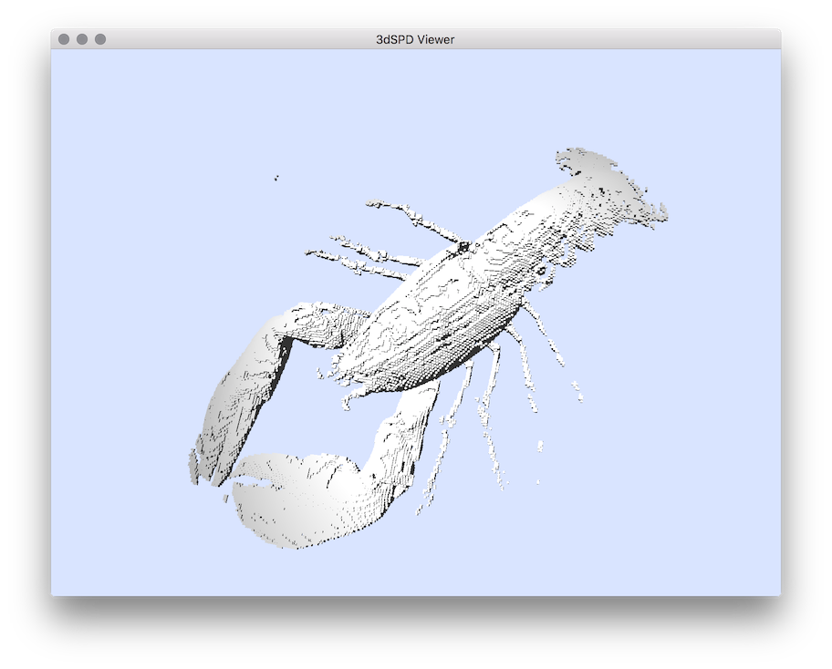
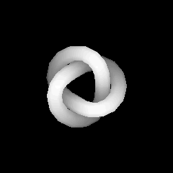
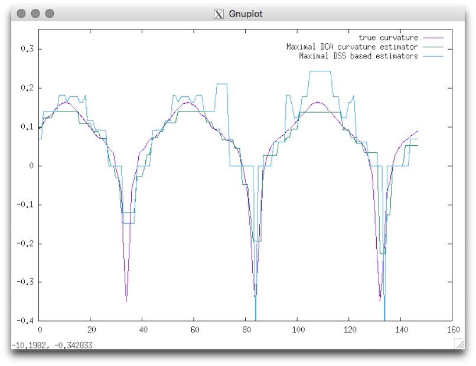
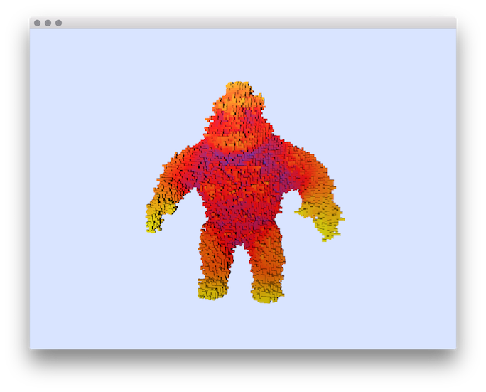
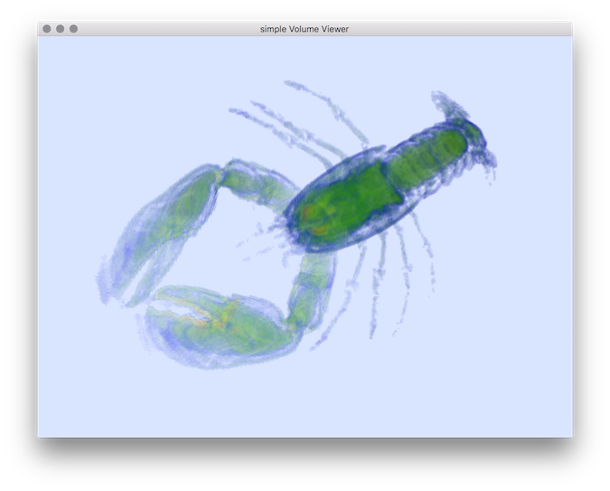
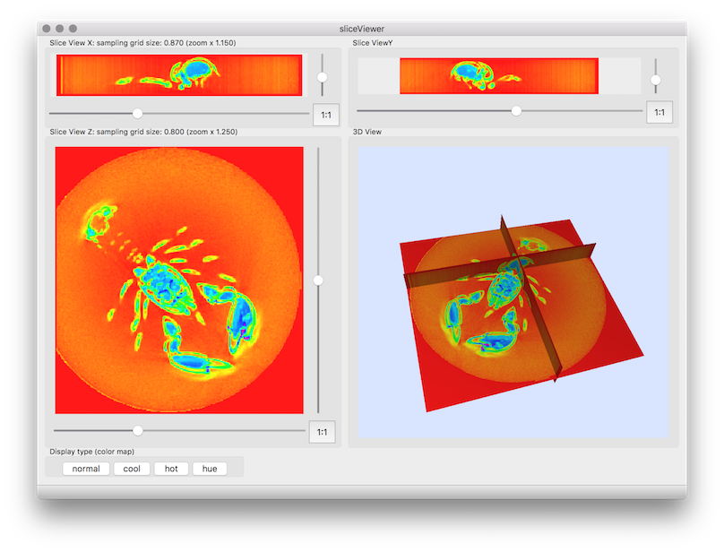

DGtalTools - Digital Geometry Tools and Algorithms Library.
DGtalTools is a separate github project containing tools constructed using DGtal library. The main goal of this part is to gather simple and useful tools exploiting the structures and algorithms defined in DGtal. The resulting tools could be useful to:
- Share and apply DGtal algorithms to various data from different domains.
- Construct demonstration tools like online demonstrations (as for instance the one of the Image Processing Online (http://www.ipol.im)
- Simplify comparisons of different algorithms with an single framework.
- Provide useful tools of digital image related algorithms (extraction of connected components, digital contour/surface extraction, simple visualization tools ... etc).
The source code of the tools can also be used to non DGtal familiar user to show how to include the DGtal library framework directly in their own source code (in complement of DGtal tutorial https://dgtal-team.github.io/doc-nightly/packageTutorials.html).
Organisation
Actually the DGTal project is organized as follows:
- Converters
- Estimators
- Generators
- Visualization
- Volumetric
-
Example of tools of section Converters :   
vol2sdp mesh2heightfield Example of tools of section Estimators : 
 
3dCurveTangentEstimator 2dLocalEstimators Example of tools of section Generators : 

contourGenerator Example of tools of section Visualization :   
3DCurvatureViewerNoise 3dVolViewer Example of tools of section Volumetric : 


3dVolMarchingCubes homotopicThinning3D Example of tools of Image processing : 

Input image imageProcessing/at-u2-v0, imageProcessing/at-u0-v1